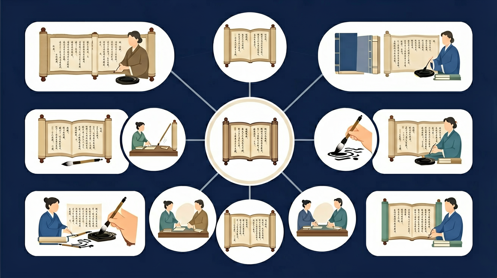

二年级语文 · 探秘汉语词语构成方式
今天你将学会↓
你觉得"美丽"这个词是怎么构成的？
汉语词语有6种常见的构成方式
把下面的字拼成词语，点击字块放入方格：
用上一个词语的最后一个字，接出新词语！
当前词链（点击词语可查看提示）：
请接"天"开头的词语↓
目标：接龙5步以上！
把词语拖到正确的结构类型框里！
5道题，每题10分！
第 1/5 题
总得分
词语的世界无比丰富！
🎉 恭喜你！已经掌握词语构成的秘密！
学习要用心，理解比死记更重要；多问"为什么"，把知识连成网
回忆：今天学了哪些关键词和规则？试着说出来。
用自己的话解释今天学的核心概念，不看书能说清楚吗？
用今天的知识解决一个实际问题，或写一个新例子。
把今天的知识与已有知识联系起来：有什么共同点？有什么区别？能不能自己创造一道新题？
先独立作答，再点选项查看对错与错因。
下列哪个词是由两个意思相关的字组成的？
下面哪组词都是单纯词？
'亮晶晶'这个词的构成方式是：
'____'是由'老'和'虎'两个有意义的字组成的合成词
答案：老虎
'老'表示年龄特征，'虎'是动物名称
像'哗啦啦'这样通过字的重叠构成的词叫____词
答案：重叠
通过部分字重复构成拟声词或形容词
关于'枇杷'这个词的正确说法是：
收集校园里10个标识牌上的词语，分析其构成方式
❓ 为什么‘蝴蝶’两个字要一起用？分开就不行吗？
❓ 老师说‘黑板’不是黑色的板，那为什么还叫黑板呀？
❓ 我造的‘飞狗’为什么不算词语？
学完这一课，这些问题你都能自信地回答。
🎯 能说出常见词语的构成方式（如：偏正、并列）
🎯 能判断给定词语的结构类型（如：‘雪白’是偏正式）
🎯 能分析合成词中语素的关系（如：‘牛奶’是并列关系）
像拆积木一样看词语的语素组合
偏正式=前修饰后（如：火车），并列式=平等组合（如：道路）
‘鸡蛋’（偏正）和‘蛋鸡’（偏正）顺序不同意思全变
观察课本里蓝色标注的合成词
用‘~子’后缀造新词（如：刷子→喷子）
✅ 强调‘马+上’是时间副词
💡 字面联想干扰
✅ 用‘家和国’互换验证并列关系
💡 语序惯性思维
口诀：前偏后正像帽子，并列兄弟手拉手
类比：词语像乐高，不同拼法变出新花样
‘书本’的结构是？
哪个词与其他结构不同？
And：学生已掌握基础汉字
But：不清楚汉字如何组合成词
Therefore：理解构词规律才能正确用词
中文词语就像搭积木，由2-4个汉字组成。比如'书包'由'书'和'包'组成，'小学生'由'小''学''生'三个字组成。前字修饰后字，'书包'就是装书的包，'牛奶'就是牛的奶。注意顺序不能反，'包书'就不是书包啦！
🌍 教室里随处可见构词例子：'黑板'是黑色的板，'课桌'是上课用的桌子。回家看看'冰箱''电视机'这些词是怎么组成的？
下面哪个词结构正确？
And：学生知道简单词语
But：不会扩展词语
Therefore：学会扩词让表达更丰富
给词语加字就像给蛋糕加奶油。'车'变'汽车'，'汽车'变'小汽车'。注意加字位置：前面加'小/大/新'（小汽车），后面加'子/儿'（车儿）。但不是所有词都能加，比如'老师'不能说'老老师'。试试把'苹果'扩成'红苹果'再扩成'大红苹果'！
🌍 超市里'苹果汁'比'果汁'说得更清楚。妈妈说'买些水果'，你可以问'要苹果还是香蕉'，这就是扩词的作用！
'牛奶'能扩成什么？
And：学生能认读词语
But：不理解词义关系
Therefore：发现构词逻辑提升理解力
很多词语的构造有秘密！'火'加'车'是'火车'（用火的车），'电'加'脑'是'电脑'（像人脑的电器）。但'马上'不是马在上面，而是'立刻'的意思，这种要特别记忆。来找规律：带'员'的字常表示人（售票员、运动员），带'机'的常是机器（电视机、洗衣机）。
🌍 看到新词别怕：'自行车'是自己会走吗？不，是'靠自已力量行驶的车'。猜猜'手机'为什么叫手机？
哪个词构造方式不同？
And：学生理解构词法
But：不会创造性组词
Therefore：灵活构词增强表达能力
现在我们当词语魔术师！用'天'字组词：'天空''天气'，还能造'天蓝色''星期天'。但要注意：1）造的词别人要听得懂 2）不能生造词。比如有'手机'，但造'手电视'就不对。试试用'水'组5个词：'水果''水杯''喝水''自来水''水彩笔'！
🌍 给玩具起名就是组词：'会发光的恐龙'叫'光电龙'，'能变形的汽车'叫'变形车'。你给玩具起过什么名字？
哪个是新造的正确词语？